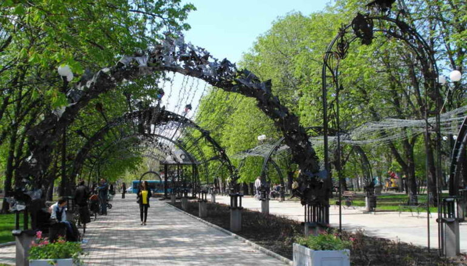

Парк кованых фигур
Парк кованых фигур стал настоящей легендой и символом Донецка. Он представляет собой парк, в котором расположены скульптуры, выкованные из металла. Автором и руководителем проекта стал Заслуженный деятель искусств Украины Виктор Бурдук. Открытие парка кованых фигур состоялось в августе 2001 года. Так же называется ежегодный международный фестиваль кузнечного мастерства, который проходит в Донецке. По сложившейся традиции работы остаются в парке в качестве подарка городу. По состоянию на 2013 год на территории парка находилось 228 скульптурных композиций. Парк кованых фигур расположен в Ворошиловском районе рядом со зданием городского исполкома. В Парке кованых фигур находится несколько аллей: «Аллея знаков зодиака», «Аллея сказок», «Аллея арок», «Аллея колец» и «Аллея любимому городу». Также в парке множество отдельных композиций. Кроме того, здесь находятся лавочки влюбленных и беседки. В 2008 году донецкий парк кованых фигур был признан уникальным в Европе. А Донецк стал полноправным членом «Кольца европейских городов-кузнецов».